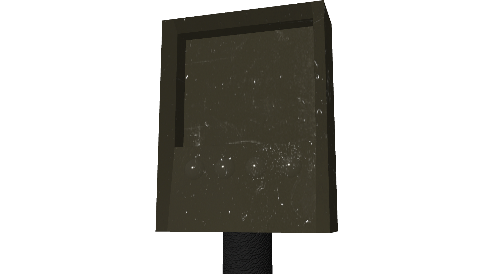

Minesweeper 3D
Inhalt
Das Original
Das Original Spiel stammt von Windows und wurde erstmals der Version 3.1 beigelegt. Seit Windows 8 ist es nicht mehr standardmäßg beigelegt, kann aber kostenlos nachinstalliert werden.
Das Spielfeld ist rechteckig und in quadratische Felder unterteilt. Zu Beginn sind alle Felder verdeckt. Unter einigen der Feldern befinden sich Minen. Durch Klicken auf ein Feld wird es aufgedeckt. Sollte sich eine Mine darunter befinden, hat man das Spiel verloren. Andernfalls zeigt das Feld die Anzahl der umliegenden Minen an. Sollte sich unter keinem der angrenzenden Feldern eine Mine befinden wird dies durch ein leeres Feld angezeigt und es werden solange die angrenzenden Felder aufgedeckt, bis an jedes äußerste aufgedeckte Feld mindestens eine Mine angrenzt. Ziel des Spieles ist es in kürzest möglicher Zeit alle Felder ohne Mine aufzudecken.
Um dem Spieler zu unterstützen, hat er die Möglickeit jedes nicht aufgedeckte Feld mittels eines Rechtsklicks mit einer Fahne zu markieren. So markierte Felder können nicht aufgedeckt werden bis die Markierung entfernt wurde. Wenn man das Spiel erfolgreich beendet, wird die Spielzeit in die Highscores aufgenommen und die Highscoreliste wird angezeigt.
Idee
Die Idee war, das Spiel in 3D umzusezten und die Perspektive des Spielers zur First-Person zu ändern. Zusätzlich sollten noch ein rundenbasierter Multiplayer-Modus und eine KI entwickelt werden. Für diese Modi sollten auch Power-Ups, wie Bonusrunden und Scanner-Jams, verfügbar sein. Das Spielfeld sollte verschiedene Settings erhalten, beispielsweise ein Wald- und ein Wüstensetting.
Beschreibung
Das Spiel ist eine 3D-, First-Person-Umsetzung des Originalspiels.
Zunächst beginnt man im Hauptmenü. Hier hat man die Wahl zwischen "Start Game", "Credits" und "Exit Game". "Start Game" startet ein neues Spiel, "Credits" zeigt die Namen der Entwickler an und "Exit Game" beendet das Programm.
Der Spieler beginnt in der oberen rechten Ecke des Spielfeldes. Nun können nach und nach die Felder aufgedeckt werden. Die Zahlen unter den aufgedeckten Feldern erscheinen auch auf dem Scanner um dem Spieler eine bessere Übersicht zu verschaffen. Gleiches gilt für gesetze Markierungen, sie werden ebenfalls auf dem Scanner angezeigt..
Steuerung
Bewegungssteuerung
Die Steuerung ist an die der meisten First-Person Spiele angelehnt. Durch eine vor und zurück Bewegung der Maus, kann der Spieler die Ausrichtung der y-Achse der Kamera verändern und somit nach oben und unten blicken. Die Blicksteuerung wurde bewusst auf nur eine Achse limitiert, um den Spieler nicht zu verwirren. Wäre eine Blicksteuerung mit mehr Achsen zulässig, könnte der Spieler mit der Rotation der Spielfigur durcheinander kommen.
Mit den Tasten W, A, S und D wird der Charakter bewegt. Wobei A und D weder ein Seitschritt noch eine Drehung um die y-Achse des Charakters auslösen. Stattdessen wird der Charakter in einem viertel Kreis nach links oder rechts bewegt. Dadurch befindet der Spieler sich immer mittig vor einem Feld.
Das Schema zeigt verdeutlicht das Problem. Die roten Punkte stellen die Position des Spielers vor und nach der Drehung dar. Der blaue Punkt ist der Punkt um den rotiert wird. Wäre die Rotation nicht genau so implementiert, wäre es für den Spieler nicht nachvollziehbar vor welchem Feld er sich befindet, da er entlang der Feldergrenze schaute.
Felder audecken und markieren
Mit einem Linksklick wird das vor dem Spieler befindliche aufgedeckt, wenn es nicht markiert oder bereits aufgedeckt ist. Ein Rechtsklick markiert das Feld vor dem Spieler, wenn es noch nicht aufgedeckt ist, oder entfernt eine bereits vorhandene Markierung darauf.
Pause-Menü
Durch einen Druck auf die Esc-Taste wird das Spiel pausiert und das Pause-Menü geöffnet. Hier hat man die Wahl zwischen "Restart Game", "Back to Mainmenu" und "Exit Game". "Restart Game" beendet das aktuelle Spiel und startet ein neues. "Back to Mainmenu" beendet das aktuelle Spiel und öffnet das Hauptmenü. "Exit Game" beendet das Programm.
Modellierung
Die meisten Modelle wurden in Autodesk Maya 2015 entworfen. Da Texturen und Shader von Unity nicht übernommen werden, mussten diese in Unity erneut dem Modell hinzugefügt werden. UV-Anpassungen fanden bereits in Maya statt. Die Werte für Bumpmap-Tiefe und Texturwiederholung wurden ebenfalls von Maya übernommen.Scanner
 Der Scanner dient zur Anzeige der Minimap. Zur Erstellung der Textur wurden die UV-Koordinaten so sortiert, dass das UV-Bild exportiert werden konnte und die Textur daraufgemappt werden konnte. Der Griff hat eine Bumpmap um ein Ledermaterial zu imitieren. Vier Sphären, die nebeneinander angeordnet sind, sollten ursprünglich als zusätzliche Anzeige der umliegenden Minen dienen, hierbei sollte die Anzahl als Binärzahl angezeigt werden. Die rechteckige Lücke wurde in Unity um ein rechteckiges Mesh ersetzt, welches eine Render-Textur zugeordnet bekam. Dieser Textur wurde eine orthographische Kamera zugeordnet, die das Spielfeld direkt von oben darstellt. Das Scannerobjekt wurde der Charakter-Kamera zugeordnet, sodass er sich immer im Blickfeld des Spielers befindet.
Flagge
Abdeckung
Mine
Terrain
Spiellogik
Steuerung
Der Spieler bewegt sich mit den Tasten W, A, S und D. Da das Spiel auf einem Raster statt findet, muss dem Spieler immer klar sein mit welchem Feld er aktuell interagiert. Deswegen sollte der Spieler immer mittig vor einem Feld stehen. Daraus folgte, dass der Spieler sich immer nur schrittweise bewegen können darf. Besonderes Augenmerk lag dabei auf den Rotationen. Der Spieler durfte sich nicht nur auf der Stelle drehen, da er sonst nicht mehr mittig vor einem Feld stünde, sondern entlag der Grenze schaute. Stattdessen musste der Spieler eine Rotation um 90° um den entsprechenden Schnittpunkt der Felder machen. Wenn er sich also nach links drehen will, rotiert der Spieler um den links neben ihm befindlichen Schnittpunkt der Felder.
Anhand des folgenden Ausschnitts soll gezeigt werden, wie die Bewegungssteuerung implementiert wurde.
Um zu verhindern, dass wärend einer Bewegung eine andere gestartet wird und somit die Positionierung nicht mehr stimmt, wird beim Auslösen einer Bewegung die Zeit ab der die nächste Bewegung folgen darf gesetzt. Diese Zeit ist ein wenig länger als die Dauer der Bewegungsanimation und wird vor dem Start einer neuen Bewegung überprüft. Als nächstes wird die neue Blickrichtung ermittelt. Nun wird die neue Endposition des Spielers errechnet. Der neue Fokuspunkt wird anhand der Blickrichtung ermittelt. Der große Faktor ist nötig um geringe Abweichungen, die bei Rundungen entstehen können, auszugleichen. Danach wird die Animation gestartet.
Pausemenü
Das Pausemenü wird durch das Drücken der Esc-Taste ausgelöst. Auch am Ende des Spiels wird nach kurzer Zeit das Pausemenü angezeigt. Wärend das Pausemenü aktiv ist, stopt die Zeit und die einzelnen Menüpunkte werden eingeblendet. Zur Wahl stehen "Restart Game", "Back to Mainmenu" und "Exit Game".
- "Restart Game" beendet das aktuelle Spiel und startet ein neues.
- "Back to Mainmenu" beendet ebenfalls das aktuelle Spiel und zeigt das Hauptmenü an.
- "Exit Game" beendet das Programm.
Kamera
Es gibt nur First-Person-Perspektive, daher befindet sich die Kamera auf Kopfhöhe des Spielers. Sie kann durch Vor- und Rückbewegung der Maus nach oben und unten ausgerichtet werden.
Eine zweite Kamera befindet sich statisch über dem Spielfeld. Das Bild dieser Kamera wird als Minimap auf dem Scanner, der sich immer im Blickfeld des Spielers befindet, zur Anzeige gebracht.
Menüs
Hauptmenü
Das Hauptmenü ist der Startpunkt des Spieles. Hier kann der Spieler sich entscheiden, ob er ein neues Spiel vias "Start Game" beginnen, sich die "Credits" anschauen, oder durch einen Klick auf "Exit Game" das Spiel verlassen möchte.
Credits
Unter Credits werden nur die Namen der Entwickler und ein Button, durch den man, wenn man ihn anklickt, ins Hauptmenü zurückkehrt, angezeigt.